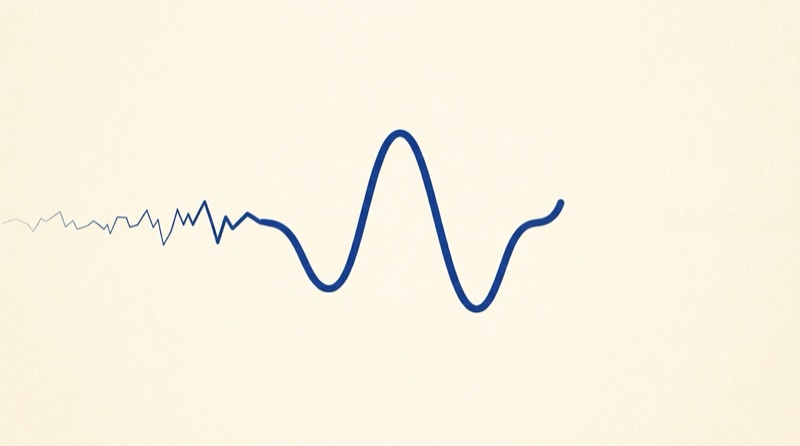
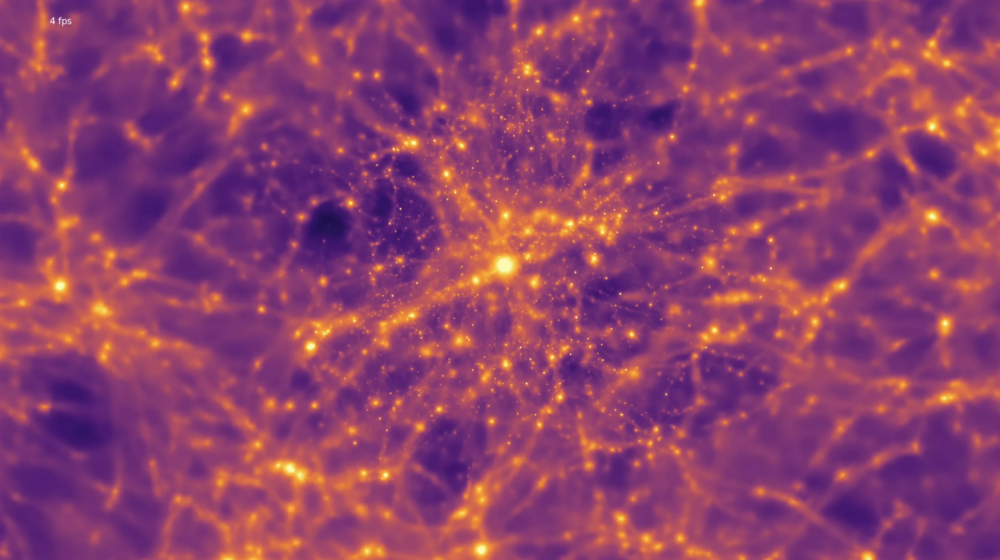
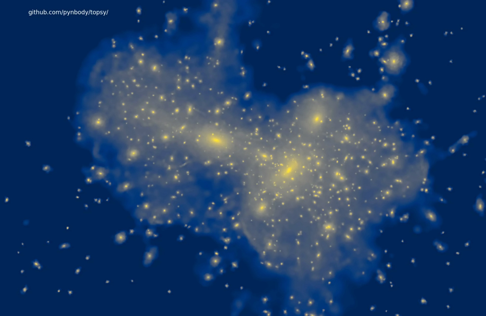

Selected Projects
A hand-picked selection of the work I am most proud of, spanning cosmological simulations, simulation-based inference, and automatic speech recognition.
01Speech Recognition for Non-Normative Speech
Making automatic speech recognition work for voices that standard models fail to understand.

02Simulation-Based Inference
Neural networks disentangling cosmology from astrophysics in cluster profiles; Magneticum runs for CAMELS.
 03
03
Local Universe: SLOW
750 Mpc³ of cosmological hydrodynamical simulation replicating the Local Universe galaxy clusters.

04Galaxy Cluster Zoom-ins
Zoom-in simulations of Coma: formation path, assembly process, low-redshift properties.
